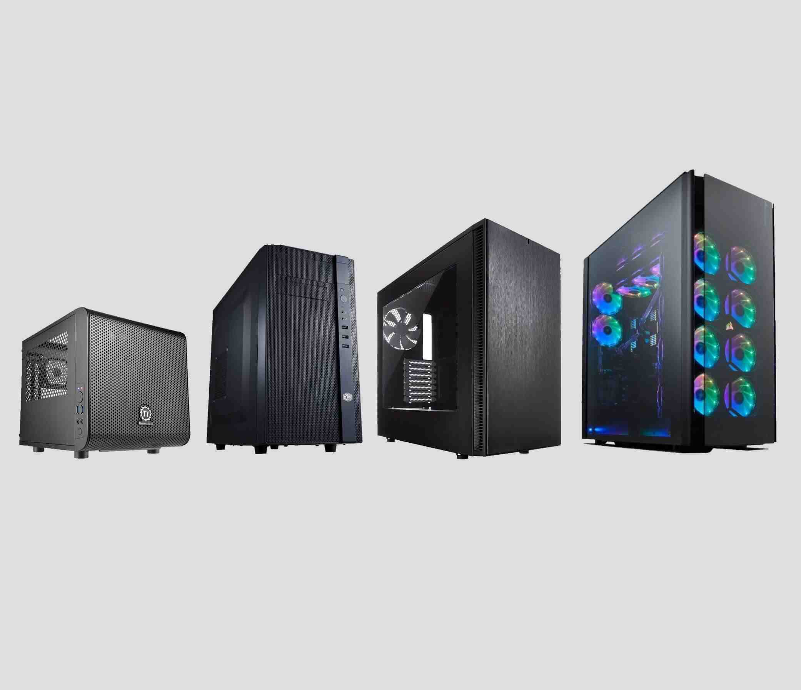
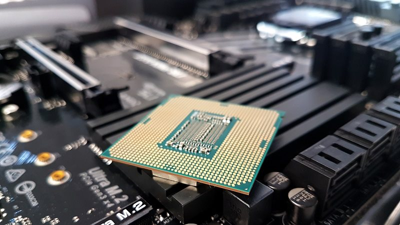

La computadora, también denominada computador u ordenador, es una máquina electrónica digital programable que ejecuta una serie de comandos para procesar los datos de entrada, obteniendo convenientemente información que posteriormente se envía a las unidades de salida.
| Caja | Placa base. | Procesador. | GPU | Memoria RAM | Almacenamiento | Refrigeración | Fuente de poder |
|---|---|---|---|---|---|---|---|
|  |  | |
|
|